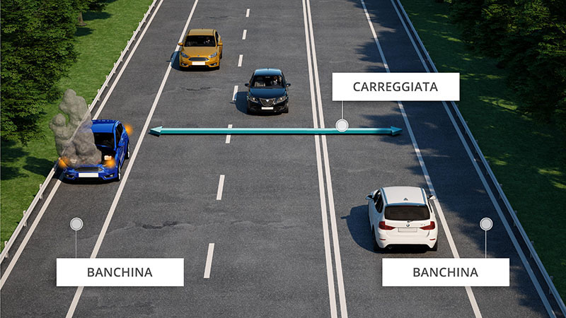

Banchine e marciapiedi

Banchina
La banchina è una parte della strada, posta al di fuori della carreggiata, situata oltre la linea bianca continua di margine della carreggiata.E' destinata alla circolazione dei pedoni e non consente di norma il transito (e quindi neanche la sosta) ai veicoli.
Marciapiede
Il marciapiede è una parte della strada, al di fuori della carreggiata, rialzata o delimitata in altro modo e riservata ai pedoni.Consente la sosta dei veicoli solo in presenza di apposite strisce di parcheggio.
Non è vero che è riservato ai pedoni e ai veicoli in sosta, qualora non sia rialzato, o che è consentita la sosta dei ciclomotori.